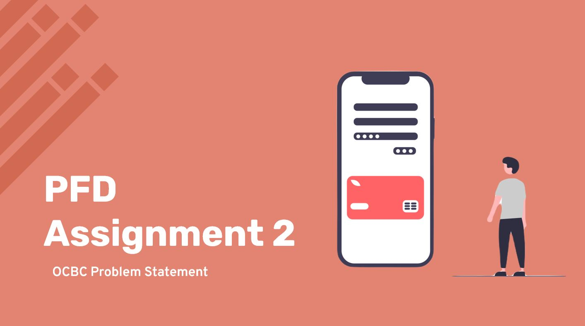

Fail-Safe Funds Transfer Experience
Week 16
Week 16 is the submission week and Chinese New Year. Since there is an Assignment due at the end of the
week, the whole team had their priorities straight as we had to meet during the Chinese New Year period to
ensure that the application has been finished and tested.
On Monday, which is the eve of Chinese New Year, we met in the morning. As some team members still had
development work to do, me and Tung Xuan started on the slides. The slides include 4 main portions, the
challenge statement, past features, new features/improvements and our pre-recorded demonstration.
On Wednesday, all our development work was done and everyone started to work on the slides and test the
application. Again, me and Tung Xuan worked on the slides, while Jin Yang, Keerthana and Yun Cong tested the
Android application.
On the last day (Friday), our team did one last check and submitted our work. Furthermore, Keerthana also
recorded the demonstration video, which includes all our new features we have implemented for this
assignment.